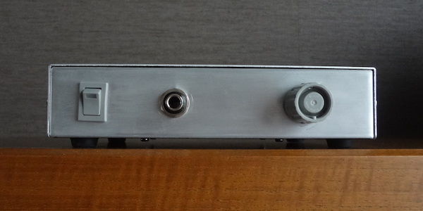
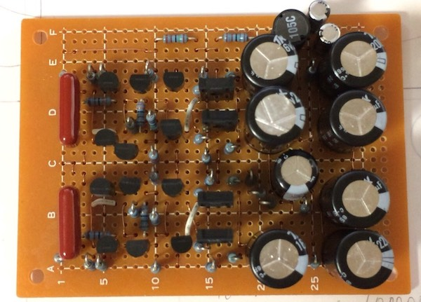
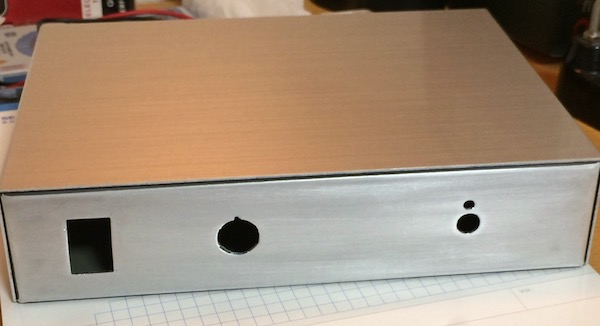
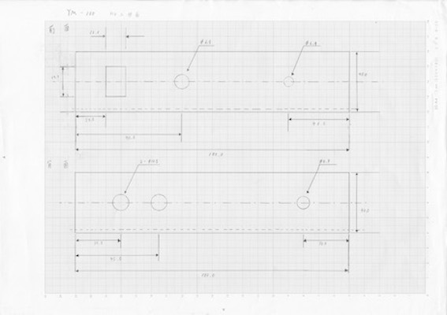
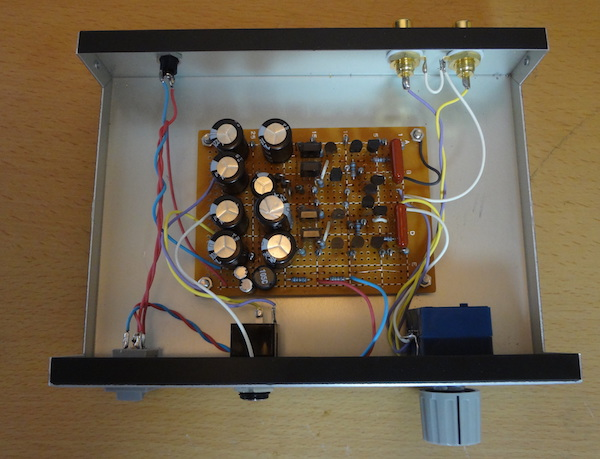

ぺるけ式FET差動ヘッドホンアンプVersion3を作ってみた 2017/11/19

ぺるけさんのサイトでFET差動ヘッドホンアンプのデザインの無骨さに一目惚れしてつくってみた
・実装してみた
タカス基板に実装した様子。トランジスタとタカス基板はぺるけさんから、コンデンサはサトー電気の通販で揃えました。
その他はなんとか手持ちで…そのせいでインダクタの横のコンデンサが変態実装になっています（10µFがなかったので22µFふたつを同極同士向かい合わせにして容量を近づけています)

あとで直しましたが上の画像は一部コンデンサの位置が違います。
・ケースの加工
ケースにあまりお金をかけたくないのでYM180で代用。前面が黒いのが見栄えがしないので表面をやすりで削ってヘアライン加工もどきをしてみました。
あらかじめヘアライン加工がなされたアルミ板を買ってきてボルトなんかで四隅を留めた方がかこいい気もしますが今回はお金がないのでゴリ押しで...

穴あけの時は加工図面を貼り付けて作業しました。
あと、切削油は食器用洗剤で代用しました。
・ケース内の配線
適当に線を縒ってしまったシャーシアースは基板固定用のねじからとっています。(右上のねじ)

・視聴環境と音について
iMacのヘッドホン出力からRCAに変換してSHUREのSRH1540で聴いてます。
残念ながら繊細な耳は持ち合わせていないので正確なことは言えませんが、原音に忠実な印象を受けました。あんまり主張がなくてずっと付き合っていけるようなアンプだと感じました
最後に、とても丁寧な説明と回路図を提供してくださったぺるけさんに感謝します。
・追記のようなもの 2017/11/22
現在、ミニジャックへの変換プラグを介して聴いているのですが、不恰好なのでスイッチ付きのヘッドホンジャックを使ってミニジャックを増設しようかと思案中